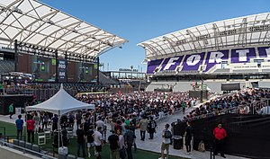

Fortnite is an online video game created in 2017, developed by Epic Games, and released as different software packages having different game modes that otherwise share the same general gameplay and game engine. The game modes include Fortnite: Save the World, a cooperative shooter-survival game for up to four players to fight off zombie-like creatures and defend objects with fortifications they can build, and Fortnite Battle Royale, a free-to-play battle royale game where up to 100 players fight in increasingly-smaller spaces to be the last person standing. Both game modes were released in 2017 as early access titles; Save the World is available only for Microsoft Windows, macOS, PlayStation 4, and Xbox One, while Battle Royale has been released for those platforms, as well as Nintendo Switch, iOS and Android devices.
While both games have been successful for Epic Games, Fortnite Battle Royale became a resounding success, drawing in more than 125 million players in less than a year, and earning hundreds of millions of dollars per month, and since has been a cultural phenomenon.
Game modes
Currently, Fortnite is distributed as two different games, though each game uses the same engine and has similar graphics, art assets, and game mechanics.
Fortnite: Save the World is designed as player-versus-environment game, with four players cooperating towards a common objective on various missions. The game is set after a fluke storm appears across Earth, causing 98% of the population to disappear, and the survivors to be attacked by zombie-like "husks". The players take the role of commanders of home base shelters, collecting resources, saving survivors, and defending equipment that help to either collect data on the storm or to push back the storm. From missions, players are awarded a number of in-game items, which include hero characters, weapon and trap schematics, and survivors, all which can be leveled up through gained experience to improve their attributes.
Fortnite: Battle Royale is a player-versus-player battle royale game for up to 100 players, playing alone or in squads of two to four. Players airdrop from a "Battle Bus" that crosses the game's map without any weapons. When they land, they must scavenge for weapons, items, and resources, avoiding being killed while attacking other players. Over the course of a round, the safe area of the map shrinks down in size due to an incoming storm; players outside that safe area take damage and can be killed. This forces remaining players into tighter spaces and encourages player encounters. The last player or squad alive is the winner.
In both modes, players can use a pickax to knock down existing structures on the map to collect basic resources, like wood, brick, and metal, to build fortifications with, such as walls, floors, and stairs. Such fortification pieces can be edited to add things like windows or doors. The materials used have different durability properties and can be updated to stronger variants using more materials of the same type. Within "Save the World" this enables players to create defensive fortifications around an objective or trap-filled tunnels to lure husks through. In "Battle Royale", this provides the means to quickly traverse the map, protect oneself from enemy fire, or to delay an advancing foe.
Both game modes are set to be free-to-play titles, though presently, "Save the World" is in early access and requires purchase to play. Both games are monetized through the use of V-Bucks, in-game currency that can also be earned only through "Save the World". V-Bucks in "Save the World" can be used to buy pinatas shaped like llamas to gain a random selection of items. In "Battle Royale", V-Bucks can be used to buy cosmetic items like character models or the like, or can also be used to purchase the game's Battle Pass, a tiered progression of customization rewards for gaining experience and completing certain objectives during the course of a "Battle Royale" season.
Development
Fortnite: Save the World
Main article: Fortnite: Save the World § Development Fortnite began from an internal game jam at Epic Games following the publishing of Gears of War 3 around 2011. Though it was not initially one of the developed titles during the jam, the concept of merging the construction game genre, representing games like Minecraft and Terraria, and shooter games arose, leading to the foundation of Fortnite.[3][4] Development of Fortnite slowed due to several issues, including switching from the Unreal Engine 3 to Unreal 4, a deeper role-playing game approach to extend the life of the game, and a switch of art style from a dark theme to a more cartoonish style. Further, Epic was looking to get into the games as a service model, and brought in Chinese publisher Tencent to help; Tencent took a large stake in Epic as part of this, leading to the departure of several executives, including Cliff Bleszinski, who had been a key part of Fortnite's development. Fortnite's approach was changed to be Epic's testbed for games as a service, and further slowed the development.
Fortnite Battle Royale
Main article: Fortnite Battle Royale § Development Near the same time that Epic released Fortnite into early access, PlayerUnknown's Battlegrounds had become a worldwide phenomenon, having sold over 5 million copies three months from its March 2017 release, and drawing strong interest in the battle royale genre. Epic recognized that with the Fortnite base game, they could also do a battle royale mode, and rapidly developed their own version atop Fortnite in about two months.[10] By September 2017, Epic was ready to release this as a second mode from "Save the World" in the paid-for earlier access, but then later decided to release it as a free game, Fortnite Battle Royale, supported with microtransactions. This version quickly gained players, with over 10 million players during its first two weeks of release, and leading Epic to create separate teams to continue the Fortnite Battle Royale development apart from the "Save the World" mode, outside of common engine elements and art assets.[11][12] This allowed Fortnite Battle Royale to expand to other platforms otherwise not supported by the "Save the World" mode, including iOS and Android mobile devices and the Nintendo Switch.
Reception
See also: Fortnite: Save the World § Reception, and Fortnite Battle Royale § Reception
With both modes of Fortnite still considered to be early access, journalists have yet to provide comprehensive reviews of either mode.

The Fortnite Pro-Am event at E3 2018
The Save the World mode achieved over one million players by August 2017, just prior to the release of Battle Royale.
Fortnite Battle Royale, on the other hand, became a significant financial success for Epic Games, leading them to separate the teams between Save the World and Battle Royale to provide better support for both modes. Within two weeks of release, over 10 million players had played the mode,[16] and by June 2018, just after the Nintendo Switch release, had reached 125 million players.[17] Revenue from Fortnite Battle Royale during the first half of 2018 had been estimated in the hundreds of millions of dollars per month.
Awards
The game was nominated for "Best Co-op Game" by PC Gamer, and for "Best Spectator Game" by IGN.
Year
Award
Category
Result
2017
The Game Awards 2017
Best Multiplayer
Nominated
2018
16th Visual Effects Society Awards
Outstanding Visual Effects in a Real-Time Project (A Hard Day's Night)
Nominated
D.I.C.E. Awards
Outstanding Achievement in Online Gameplay
Nominated
SXSW Gaming Awards
Excellence in Multiplayer
Nominated
Excellence in Multiplayer
Nominated
...
...
...
2018 Webby Awards
People's Voice Award for Best Multiplayer/Competitive Game